peppercarrot
I went on a search for artists that licence their work under a free creative commons licence. Through the site DeviantArt (which needs a CC licence search filter) I found Pepper and Carrot. Not only is it a very high quality professional web comic, it is licensed under the super awesome CC BY.
I used the web comic as reference and redrew it in my own style, along with a few extra doodles thrown in there.
Enjoy -
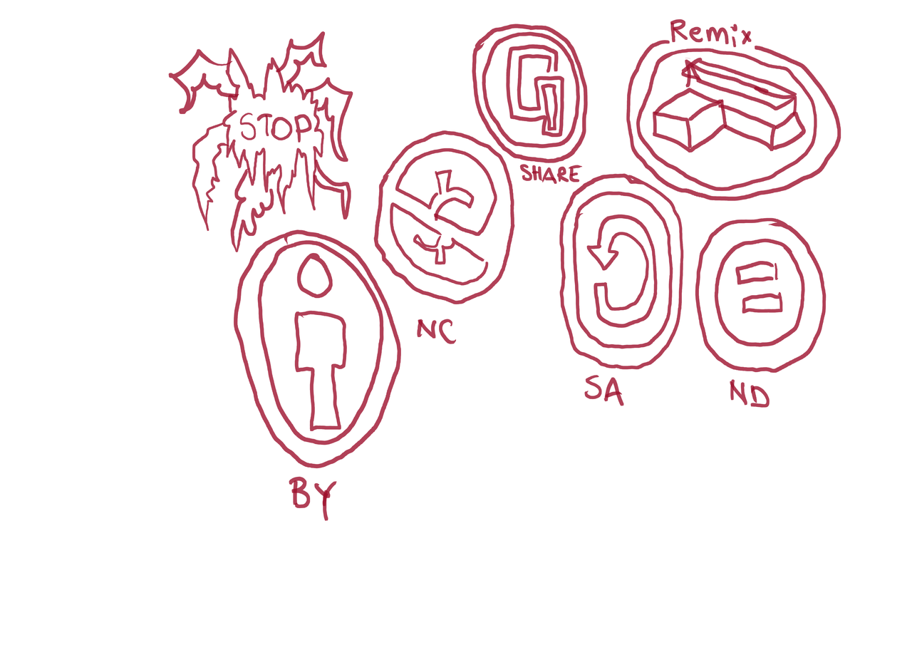
Creative Commons icons redrawn with excellent round circles.
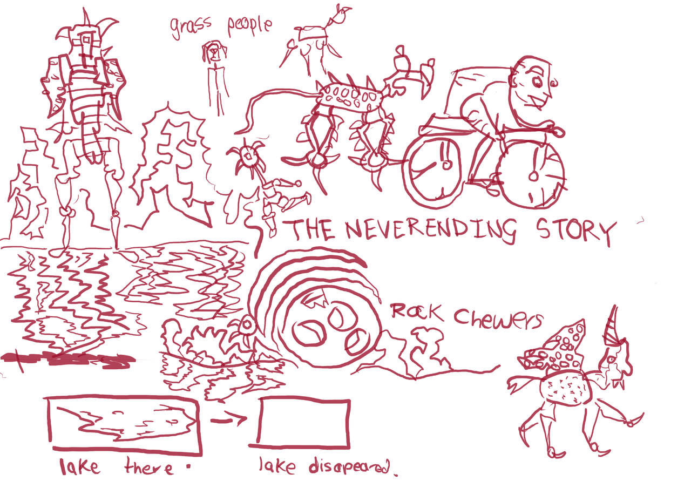
I have been reading the NeverEndingStory. I had seen the movie. The book is excellent. These sketches were created when I was reading the book. Almost finished it so need to decide on the next book - considering a Terry Pratchet Discworld novel that contains witches since that will work well with the recent Pepper and Carrot drawings.
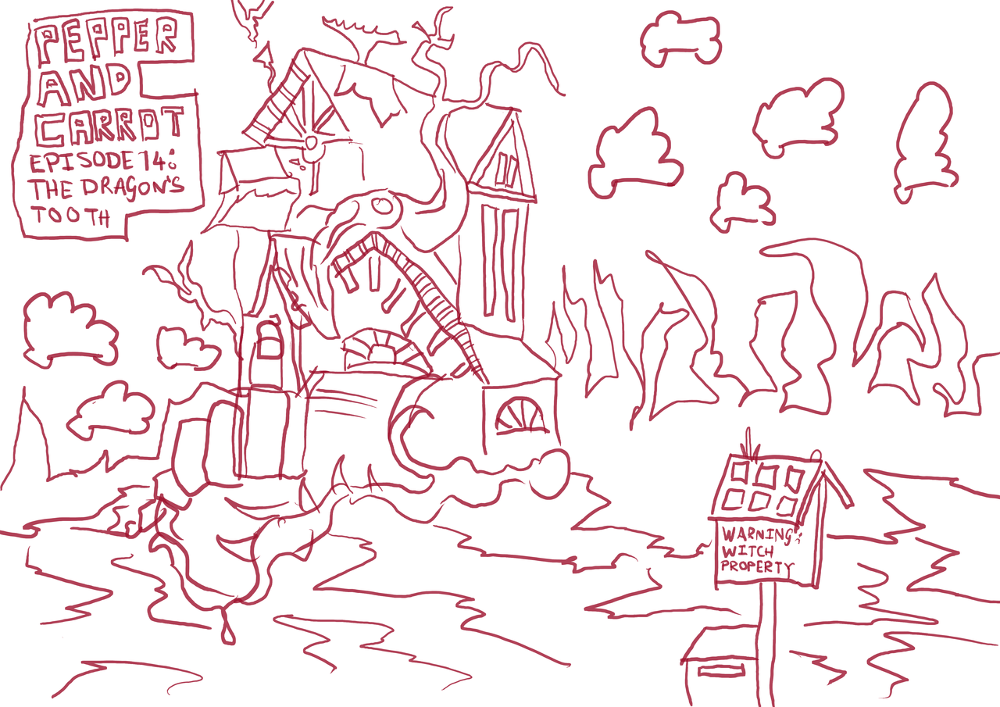
The first Pepper and Carrot sketch. One of the most appealing elements about the web comic is the focus on environment - something I am passionate about.
I had to switch some things around - such as the mailbox and didn't include the birds. I've also gone my own way with clouds and trees behind the house.
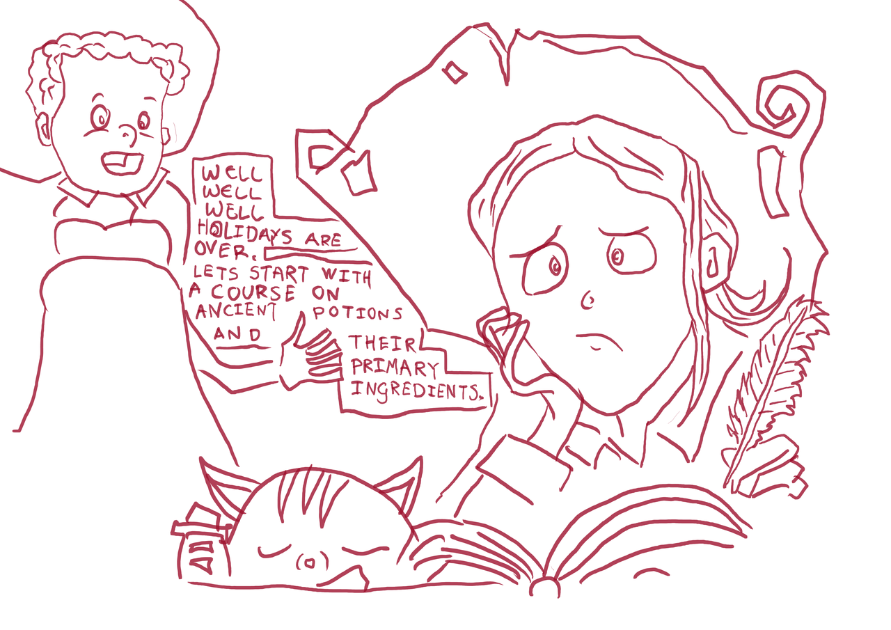
The first sketch of the characters. Didn't include any background, only the characters and the book that Pepper is drawing in. The text is written in caps.
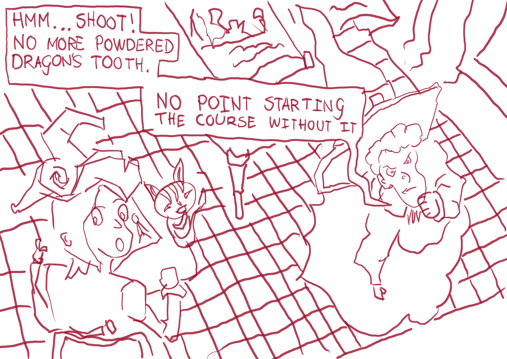
Including the characters and elements of the room. I love the high angle!
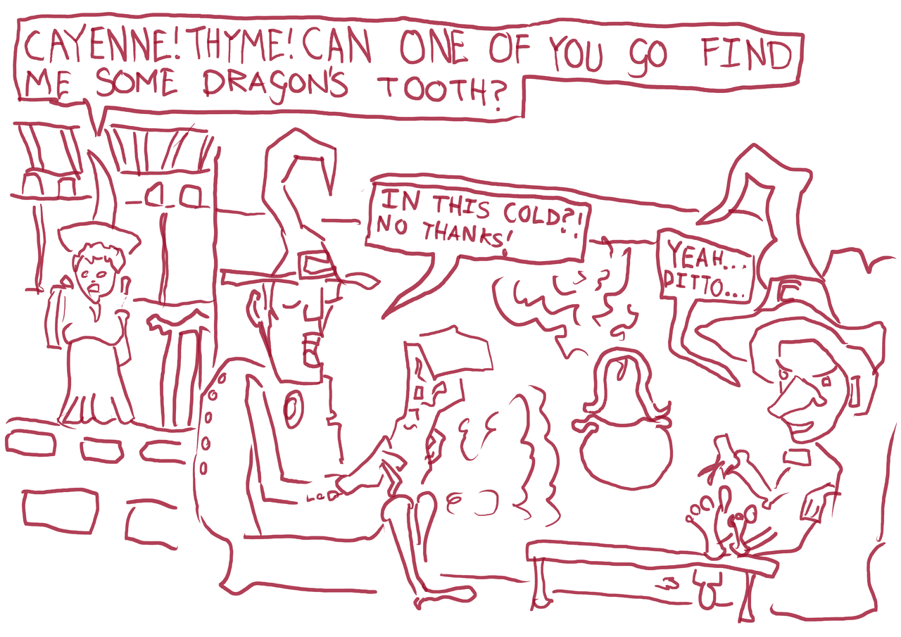
Sketch of other two witches. Fire is smoking.
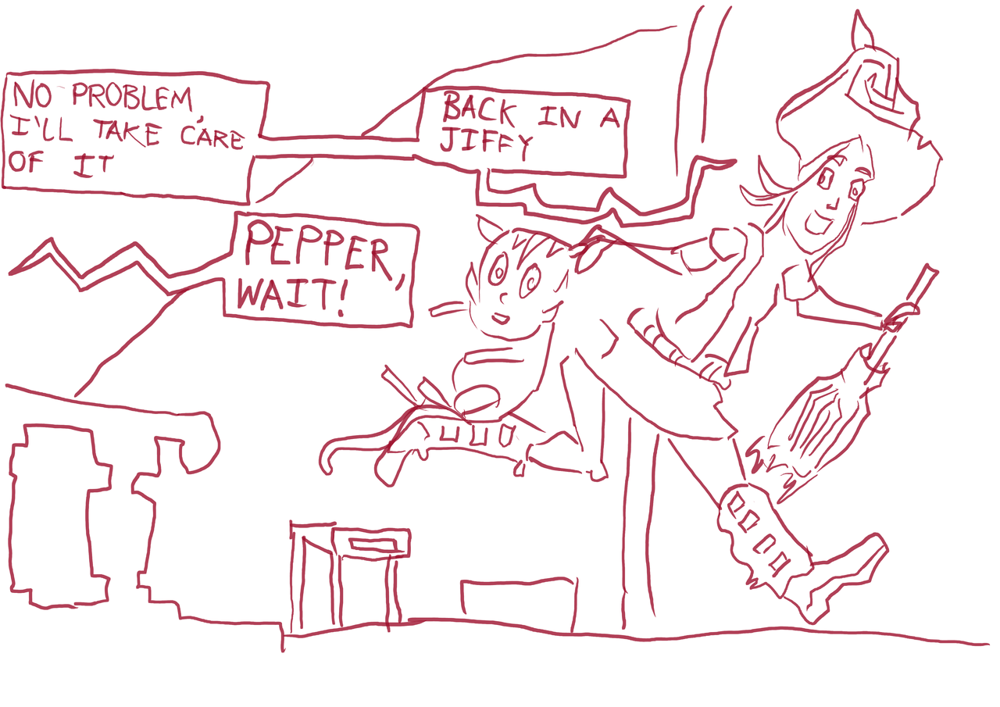
Pepper rushing off. I liked the blur movement effects in the original. Mine has this with the foot being redrawn. I don't erase, only draw.
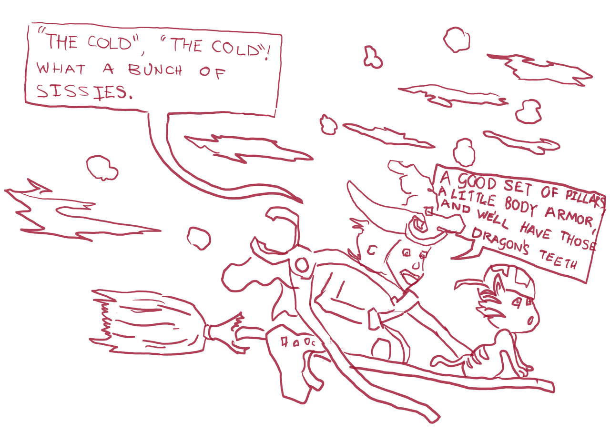
Pepper and Carrot on the broomstick. Had fun drawing the pillars. Should of left space in the sky for the text which I ended up cramming in.
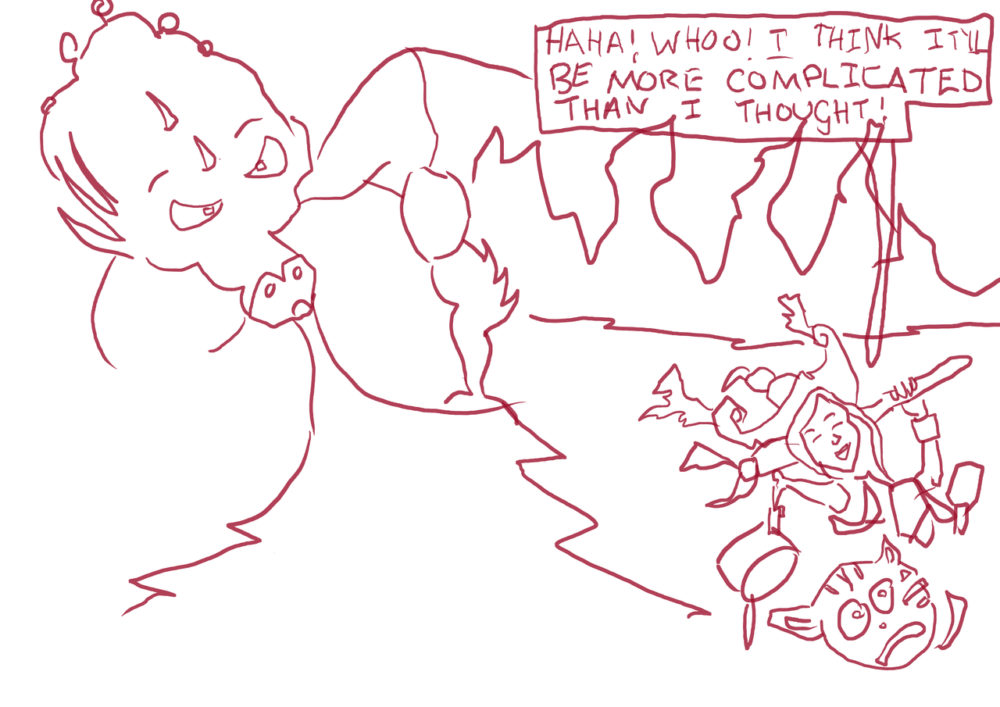
I didn't end up finishing redrawing the whole comic. There was nothing in the rest that really made me want to draw it. Had lots of fun with this though.
For NanoWriMo this year I might write a novel based on Pepper and Carrot.
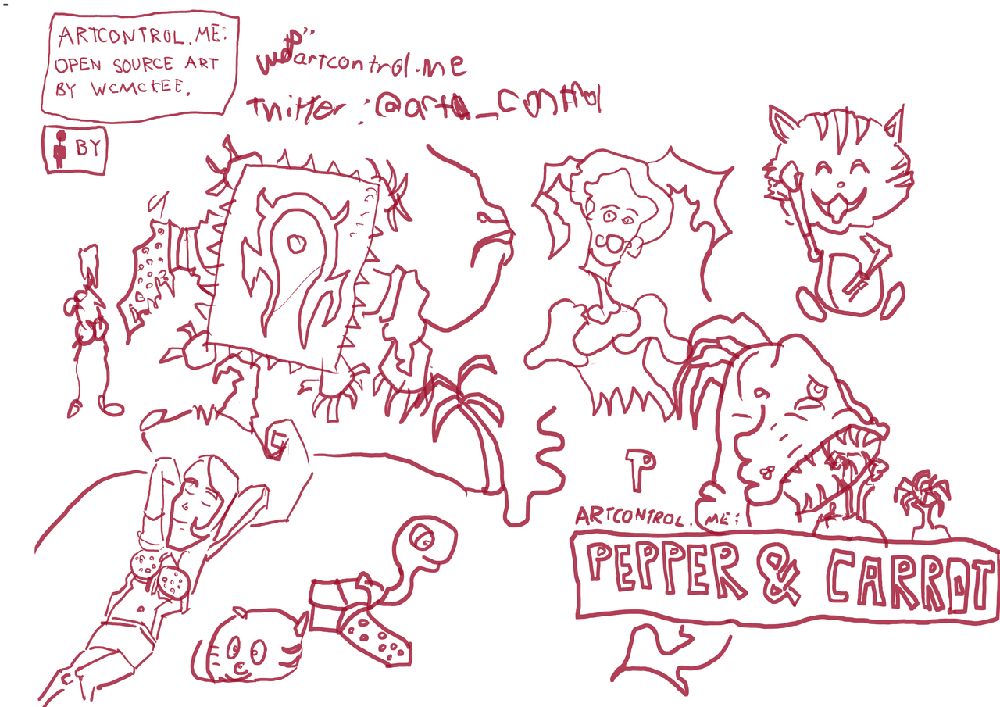
Started drawing elements from another Pepper and Carrot comic - where the two are on a beach. I liked the monster and the change in enviorments.
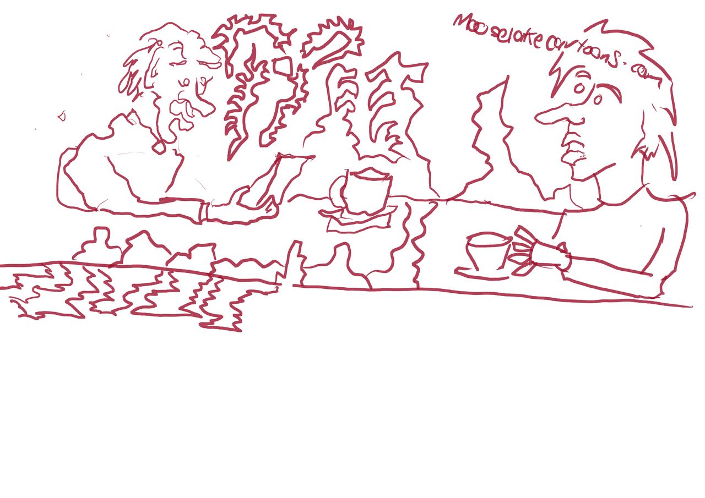
I redrew a comic from mooselakecartoons Just something simple.
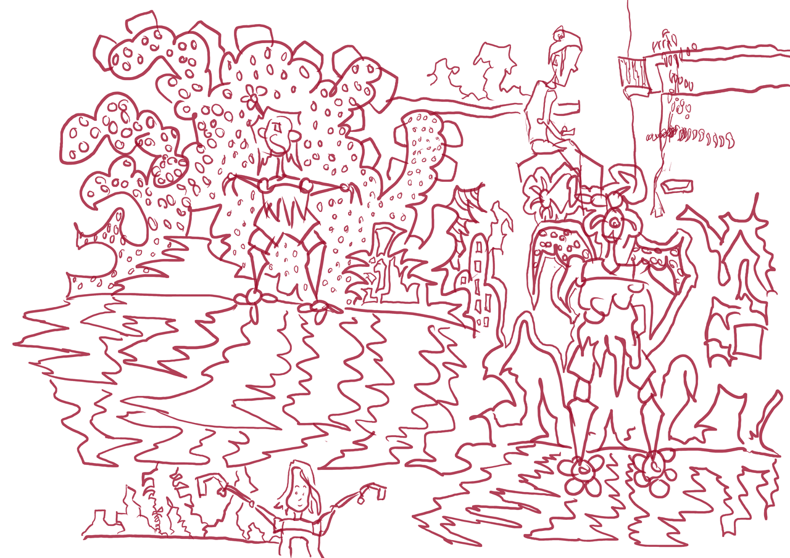
Drew this at Waikato Uni. Mostly environment from imagination but a observational drawing on the top right.